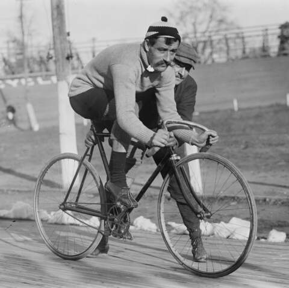

Матеріал з Вікіпедії — вільної енциклопедії.
Велосипедний спорт — (в широкому сенсі слова) — це переміщення по землі з використанням транспортних засобів (велосипедів), які урухомлює м'язова сила людини. Велоспорт — одна з популярних форм рухомої активності, зміцнює легені та серце і звичайно, м'язи ніг.
Велосипедний спорт є олімпійським видом спорту.
До велоспорту входять такі дисципліни як гонки на треку , шосе, пересіченою місцевістю, маунтінбайк, змагання з фігурної їзди та гри в м'яч на велосипедах — велополо та велобол тощо.
Велоспорт також є частиною такого виду спорту як тріатлон. Основна мета гоночних дисциплін — найшвидше подолання дистанції.
Як вид спорту, ma велосипедний спорт керується Міжнародним союзом велосипедистів, що має штаб-квартиру в Швейцарії.
Зміст
- Дисципліни велоспорту
- Шосейний велоспорт
- Велокрос
- Велокрос
- Велотрекові гонки
- Маунтінбайк
- Велосипедний мотокрос
- Див. також
- Література
- Посилання
- Посилання
Дисципліни велоспорту
Шосейний велоспорт
Шосейний велоспорт — різновид велоспорту; велогонки, що проходять на дорогах з твердим покриттям (асфальт, бруківка). Входить у програму літніх Олімпійських ігор. На міжнародному рівні регулюється Міжнародним союзом велосипедистів (UCI — Union Cycliste Internationale), Європейським союзом велосипедистів (UEC — L'Union Européenne de Cyclisme), а в Україні — Федерацією велосипедного спорту України (ФВСУ).
Олімпійські види:
- групова гонка
- індивідуальна гонка
Неолімпійські види:
- командна гонка
- багатоденна гонка
- гонка вгору
- крітеріум
Велокрос
Велокрос, або циклокрос — це змагання з велоспорту на пересіченій місцевості. Велогонщики на модифікованих велосипедах долають короткі дистанції (від 2,5 до 3,5 км) з багатьма перепонами. Жінки проходять менше кіл протягом 35-40 хвилин. Чоловіки змагаються близько години. Середня швидкість велогонщиків у середньому 20 кілометрів за годину. Змагання з велокросу проходять переважно восени і взимку, коли шосейні гонщики відпочивають або готуються до нового сезону.
Велотрекові гонки
Велоспорт на треку (або велогонки на треку) — вид велоспорту, що проходить на велотреках з використанням спеціальних трекових велосипедів.
- спринт — гонка на треку на два або три круга, в якій беруть участь два-чотири гонщики. Переможцем у кожному конкретному заїзді є той, хто перший перетне фінішну лінію.
- командний спринт
- індивідуальна гонка переслідування
- командна гонка переслідування
- гонка за очками
- гіт (індивідуальний заїзд на 1 км, 500 м або 200 м)
- медісон (парна гонка)
- кейрін
- скретч (групова гонка)
- омніум (багатоборство)
Маунтінбайк
Маунтенбайк (англ. mountain biking) — вид спорту, що включає їзду на велосипеді бездоріжжям, зазвичай пересіченою місцевістю за допомогою або спеціального обладнаного гірського або гібридного дорожнього велосипеда. Зазвичай гірські велосипеди поділяють загальні характеристики, призначенні забезпечити витривалість на поганій дорозі: широкі шорсткі шини, товсті трубки рами, амортизатори на передній вилці або на обох. В результаті гірський велосипед важить помітно більше дорожнього[1].
Зазвичай маунтбайк поділяють на чотири категорії: крос-кантрі, швидкісний спуск, фрирайд і тріал/їзда вулицями. Кожна категорія характеризується певним типом самосвідомості спортсмена та типами велосипедів та додаткового обладнання.
Це індивідуальний вид спорту, що вимагає витривалості, здібностей управління та ремонту велосипеда та здатності покладатися на себе; ним можна займатися всюди
від подвір'я до ґрунтової дороги, але здебільшого гірські велосипедисти вибирають бездоріжжя, погані ґрунтові дороги або вузькі стежки через ліси, гори та поля
Багато аспектів гірського велоспорту більше нагадують біг стежками, ніж звичайний велоспорт. Оскільки велосипедисти часто опиняються далеко від цивілізації, в цьому спорті існує велика частка етики та покладання на себе. Велосипедисти повинні бути здатними відремонтувати дрібні поломки свого велосипеда, такі як проколота шина, ризикуючи інакше опинитися далеко від допомоги. Цей ризик, проте, додає динаміки спорту. В результаті часті групові поїздки, особливо на довгих шляхах.
- крос-кантрі (гірський велосипед)
- Олімпійський крос-кантрі
- Марафонський крос-кантрі
- Крос-кантрі по дистанції від одного пункту до іншого
- Крос-кантрі короткою кільцевою трасою
- Крос-кантрі гонка на час
- Крос-кантрі командна естафета
- Крос-кантрі багатоденна гонка
- Швидкісний спуск (гірський велосипед)
- Байкер-крос
- Вільна їзда на велосипеді
Велосипедний мотокрос
Велосипедний мотокрос, веломотокрос або BMX Racing (англ. Bicycle MotoCross, «велосипедний мотокрос») — одна з дисциплін велосипедного спорту. Для цієї дисципліни використовується однойменний тип велосипеда — BMX.
- BMX-рейс
- Дерт
- BMX-верт
- Флетленд
Див. також
- Михайло Халілов
- Велосипедні гонки
- Федерація велосипедного спорту України
- Велофрістайл
- Флетленд
Література
- Історія розвитку велоспорту на Житомирщині : монографія / О. С. Кухарський, Г. П. Грибан. – Житомир : Рута, 2016. – 452 с. – ISBN 617-581-271-6.